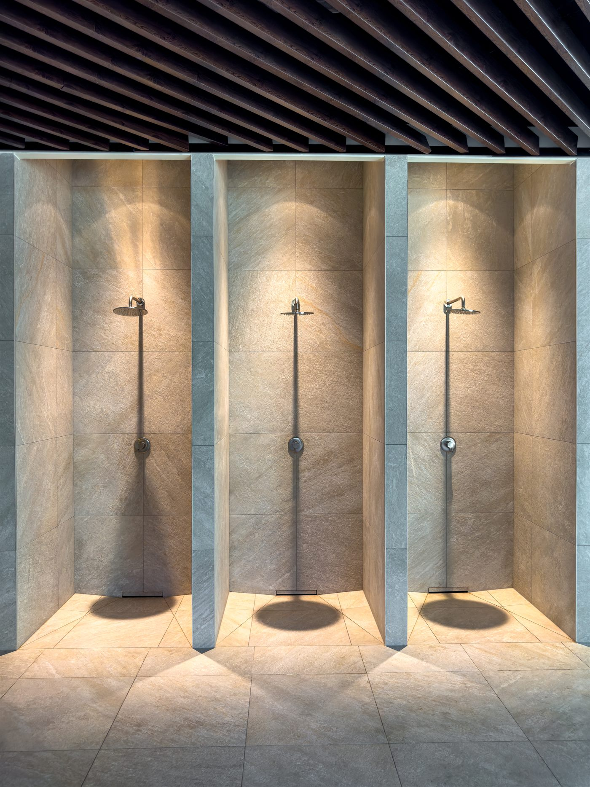

Alles aus einer Hand.
Wir koordinieren Sanitär, Fliesen, Elektro und Maler – Sie haben einen Ansprechpartner und einen festen Termin- und Kostenrahmen.
Von der ersten Idee bis zur fertigen Übergabe: Wir planen, koordinieren und sanieren Ihr Bad komplett – ein Ansprechpartner, alle Gewerke, ein transparenter Festpreis.
Ob altersgerechter Umbau, energetische Modernisierung oder ein komplett neues Bad: Wir beraten Sie ehrlich, planen passgenau und setzen sauber um – mit Sanitärobjekten und Armaturen namhafter Markenhersteller.
Wir koordinieren Sanitär, Fliesen, Elektro und Maler – Sie haben einen Ansprechpartner und einen festen Termin- und Kostenrahmen.
Bodengleiche Duschen, durchdachte Grundrisse und sichere Lösungen – damit Ihr Bad heute und in Zukunft passt.
Nach dem Vor-Ort-Termin erhalten Sie ein transparentes Festpreis-Angebot – ohne böse Überraschungen bei der Abrechnung.

Wir verbauen Sanitärobjekte und Armaturen namhafter Hersteller – langlebig, schön und genau auf Ihren Stil abgestimmt. So wird aus Ihrem Bad ein Raum, an dem Sie jeden Tag Freude haben.
Die Kosten hängen von Größe, Ausstattung und Umfang ab. Nach einem Vor-Ort-Termin erhalten Sie von uns ein transparentes Festpreis-Angebot ohne versteckte Kosten.
Ein durchschnittliches Komplettbad ist in der Regel in zwei bis drei Wochen fertig. Den genauen Zeitplan stimmen wir vorab mit Ihnen ab.
Ja. Von der Demontage über Sanitär, Fliesen und Elektro bis zur Übergabe koordinieren wir alle Gewerke – Sie haben nur einen Ansprechpartner.
Ja, wir planen alters- und barrieregerechte Bäder mit bodengleicher Dusche und beraten Sie zu möglichen Zuschüssen und Förderungen.